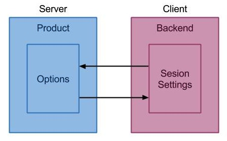

Xavier Briand
Senior Web Application Developer
ExperiencePoint Inc
(please excuse my accent)
mobro.co/xavierbriand
Moving to a
Service Oriented Architecture
from tightly coupled
applications
ExperiencePoint
"The best way to learn is to experience."
Business
(1+½)+(4+3) simulations
Previous Architecture
Problems
tightly coupled applications
no dependency management
no tests
deprecated technologies
1 dev symptoms
2 environments
SVN
ExperienceChange Model
Meet the dev team
Step 1
Reset ⟲
Goal: efficient dev environment
VM
Modern SCM
Modern Frameworks
Tasks automation
Problem
Dependency management

logo: WizardCat
$ make build
{
"name" : "ep/ec",
"license" : "proprietary",
"autoload" : {
"psr-0": { "": "src/" }
},
"require": {
"php" : ">=5.3.3",
"symfony/symfony" : "~2.4",
"doctrine/orm" : "~2.2,>=2.2.3",
"ep/backend-sdk-bundle" : "dev-master",
"ep/old-stuff" : "dev-trunk"
},
"require-dev": {
"phpunit/phpunit": "3.7.*"
}
}
$ php composer.phar
______
/ ____/___ ____ ___ ____ ____ ________ _____
/ / / __ \/ __ `__ \/ __ \/ __ \/ ___/ _ \/ ___/
/ /___/ /_/ / / / / / / /_/ / /_/ (__ ) __/ /
\____/\____/_/ /_/ /_/ .___/\____/____/\___/_/
/_/
Available commands:
install Installs the project dependencies from the composer.lock file if present, or falls back on the composer.json.
require Adds required packages to your composer.json and installs them
search Search for packages
self-update Updates composer.phar to the latest version.
status Show a list of locally modified packages
update Updates your dependencies to the latest version according to composer.json, and updates the composer.lock file.
validate Validates a composer.json
Problem
App config management
composer (Platform packages)
incenteev/composer-parameter-handler
$ make build
Problem
QA

$ make prepare analysis
Step 2
“Defeat in detail”
Divide and gather (DRY)
Keep things small + KISS
Design by contract
Leverage your architecture
Opportunity: GlobalTech
Inside
Remove Flash... No! Ok but:
Let’s use the best technology
to do the job
AMF => plain HTTP via browser
Business Logic => Backend
Frontend UI => Flash
Hypermedia API
> POST /games/ + content
< 201 Created
< Location /games/1
> GET /games/1
< 200 Ok
<
< <game>
< <!-- ... -->
< <links rel=”actionX” src=”...”></links>
< <links rel=”actionY” src=”...”></links>
< </game>
David Zuelke "Designing HTTP Interfaces and RESTful Web Services"
Globally
Implementation
Strategy Pattern
Solutions
OAuth2
Solutions
Backend App API
Solutions
Product API
The other way around
Step 3
Consolidate
BackendAppSdkBundle
OAuth2ClientBundle
ApiBundle
AssetsBundle
Rinse and repeat...
Step 4
Plan for the futur
Question?
joind.in/9999 (four 9)